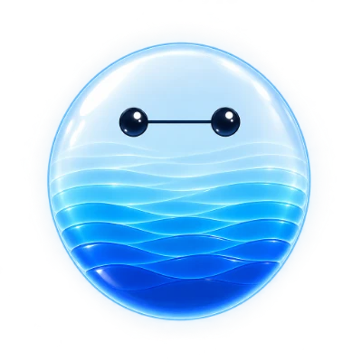

BCT CRM 設計系統
BCT AI CRM prototype 用到的顏色、字體、元件和動態規則。這一頁載入的是 prototype 本身的樣式表，所以下面每個範例都是實際元件，不是截圖。可以離線開啟。
架構
建在 Gina UI（Business v2）上。Gina 的檔案原封不動放在 vendor/gina/，BCT 需要的部分都寫在 bct-crm.css，而且只在 body.business-theme.bct 底下生效。要改樣式就改 bct-crm.css，不要動 Gina 的檔案。
vendor/fonts/inter.css Inter 字體（本機檔，離線可用） vendor/gina/tokens.css Gina 基礎 token：灰階、間距、圓角、字級 vendor/gina/app.css Gina 版面：側欄、對話、popover vendor/gina/app-business-v2.css Gina Business v2 主題 bct-crm.css BCT 品牌色與 CRM 元件（依編號分段）
顏色
品牌色只有四個：深藍、主藍、青藍，加上當作「黑色」用的墨色。灰階和背景沿用 Gina。色碼是從實際樣式表讀出來的。
品牌
文字、線條、底色
圖表順序
墨色 → 主藍 → 青藍 → 灰 #cfd6e0。最重要的一類用墨色；只有一個重點時，其他全部用灰，重點用墨色（例如 Activity 有會議的日子）。「今天」固定用青藍。
字體
英文用 Inter（400、500、600、700），中文用系統字（Mac 是蘋方，Windows 是微軟正黑體）。數字一律等寬（tabular-nums），跳動時才不會左右晃。
- 首頁問候30px · 500 · 墨色
- Good afternoon, Gaurav
- 頁面標題34px · 400 ·
.rp-head h1 Reports
- 大數字46px ·
.rp-big，單位用 sup - $2.55M
- 卡片標題13.5px · 500 ·
.rp-ct - Activity, last 60 days · 142 emails · 31 meetings
- 內文13.5–14.5px · 400
- Gulf Harbor closes Monday with pricing still open.
- 說明、日期12–12.5px · Tertiary ·
.rp-muted - 60% win rate. Both losses were on price.
數字列
Reports、Accounts 頁首和首頁釘選列都用同一組數字樣式。標籤加了虛線底線的，滑過去會出現說明（見 Tooltip）。進頁面時數字會從 0 跳到實際值，約 0.2 秒。
變化：.rp-delta.up 綠、.rp-delta.down 紅，沒有方向的用預設灰。
按鈕與篩選
一個區塊最多一個主要按鈕（主藍）。深色 .ink 留給頁面上最重要的一個動作；套用後的按鈕變灰，不能再按。
.btn-bct · .btn-bct.secondary · .btn-bct.ink · .btn-bct.applied
篩選
.chip-f，選中加 .active（深藍）。數量放在 .chip-n。同一組裡二選一的放前面，用分隔線隔開可複選的類型。
狀態標籤
一列只放一個最重要的狀態。顏色代表意思，不要拿來裝飾。
overdue 逾期、要馬上處理 · warn 太久沒動 · ok 正常 · new 新進 · match 系統找到關聯 · due 今天到期 · ink 今天的行程 · muted 已處理。
AI 助理
助理用同一顆水滴頭像（assets/ai/：一般、思考、開心三張）。大顆會動的只出現在首頁和對話；頁面上的提示用小頭像。每頁的 AI 提示怎麼統一，還在討論中，下面是目前的標準長條。

2 accounts need you. Gulf Harbor closes Monday with pricing still open, and Muscat Municipality has been quiet for 18 days.
.acc-ins：小頭像 34px、粗體開頭一句、右邊一個藍字動作（.acc-ins-go）。一句話講完，說得出「為什麼現在要做」。
頭像尺寸
首頁 84px，會動
頁面提示 34px
對話回覆 24px
思考中
開心（點擊、打招呼）
Tooltip
全站共用一個黑底 tooltip（tooltip.js，class 是 .bct-tip，因為 Gina 已經用了 .tip）。分兩種：數值型掛在圖表上，顯示那一點的數字；說明型掛在標題和欄位名上，加虛線底線，說明意思。
樣式：墨色底、白字 12.5px、圓角 8px、最寬 240px、有箭頭。第一行粗體可省略。
滑過去試試看。規則：停 300ms 才出現；在長條間滑動直接換內容；滑走、捲動、Esc 立刻收；Tab 聚焦也會出現；手機點一下顯示。
寫法：data-tip 放內容、data-tip-h 放粗體第一行；說明型加 class="tip-def" tabindex="0"；細長的圖表在外層加 data-tip-cols，游標最近的那一根會被選中。
卡片與表格
卡片圓角 20px、1px 外框、極淡陰影。Reports 的卡片放在 12 欄網格裡（.s4 佔三分之一、.s8 三分之二、.s12 整排），同一排的卡片內容要差不多高，不留大片空白。
60% win rate. Both losses were on price.
Proposal is where deals wait longest. BCT average is 19 days.
卡片的結構：標題（.rp-ct）→ 內容 → 一句結論（.rp-muted）。結論要說出「所以呢」，不只重複數字。表格（Accounts）整列可點、可用 Enter 開啟紀錄，打開紀錄面板時隱藏較不重要的欄位，不讓名字被擠斷。
動態
輕：小幅上升加淡入，不彈跳、不大幅滑動、不閃。系統設定「減少動態」時全部跳過。
- 進頁面：上升 8px、淡入 320ms，依序間隔 60ms；曲線
cubic-bezier(.2,.7,.2,1)。 - 首頁第一次：水滴頭像落下（小擠壓＋漣漪），問候和卡片依序出現，約 0.8 秒；全部落定後頭像做一次點擊時的動態（笑臉、水波、水滴）打招呼。
- 回到首頁：同樣依序上升但較短（約 0.5 秒），沒有落下和漣漪，最後一樣打招呼。
- 點首頁的建議：頭像先「思考」，頁面淡出，頭像飛進對話、落在 AI 回覆的小頭像位置，兩端用同一張圖。
- Tooltip：延遲 300ms，淡入 140ms 加 4px 位移；消失不做動畫。
- 淡出只寫終點（從目前透明度開始），避免先閃成實色。
文字規則
介面文字是英文，說明文件是繁體中文。
要
- 句首大寫（Sentence case）：Open pipeline，不是 Open Pipeline。
- 日期寫成 14 Oct、今天寫 Today；金額寫 $540K、$2.55M。
- AI 的句子先講結論，再講原因，最後給一個動作。說得出根據（例如 Based on OPP-1031）。
- 中文不能孤字：最後一行只剩一兩個字時，用
<span class="nb">把詞包起來。
不要
- 在 Workspace 頁面重複打招呼（問候只在首頁）。
- 同一件事用三種按鈕樣式。
- AI 提示講別頁的事，或按下去跳到別頁卻沒說。
- 用顏色裝飾：紅色只代表逾期或需要注意。
檔案
直接用瀏覽器開 index.html 就能看，不需要網路或伺服器。示範日期是 2026 年 10 月底，登入的示範使用者是 Gaurav Shrotriya。
index.html prototype 入口 crm.js 首頁、對話、紀錄面板、側欄 views.js Workspace：Pipeline、Accounts、Reports page-ask.js 「Ask about this page」：帶著頁面開新對話 tooltip.js 黑底 tooltip home-motion.js 首頁進場、離開、打招呼 ai-face-motion.js 水滴頭像的眨眼、水波、點擊動態 chat-export.js 匯出對話 assets/ 品牌圖、AI 頭像、人物照片、插圖 docs/design-system.html 這一頁